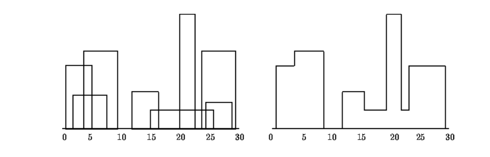

در یک شهر تعدادی ساختمان داریم و مختصات قرار گرفتن آن ها را نیز در اختیار داریم. می خواهیم خط افق این شهر را بیابیم
برای نمونه، شکل زیر را در نظر بگیرید

برنامه ای بنویسید که در ورودی لیستی از ساختمان ها بگیرد که هر ساختمان یک توپل ۳ تایی است که عضو اول آن مختصات شروع آن ساختمان است، عضو دوم ارتفاع آن و عضو سوم مختصات پایان ساختمان.
در خروجی باید افق شهر را در یک لیست ارایه دهید. برای این کار، شکل افق شهر را در نظر بگیرید و نقاطی که در
آن شکل تغییر ارتفاع رخ می دهد را در یک لیست قرار دهید. هر عضو لیست یک ۲ تایی است که عضو اول آن مختصات نقطه و عضو دوم آن ارتفاع است.
برای مثال برای ورودی
[(1,11,5), (2,6,7), (3,13,9), (12,7,16), (14,3,25),
(19,18,22), (23,13,29), (24,4,28)]
باید خروجی شما
[(1, 11), (3, 13), (9, 0), (12, 7), (16, 3), (19, 18),
(22, 3), (25, 0)]
باشد
برای این کار، باید تابع
func(li)
را پیاده سازی کنید که ورودی و خروجی آن به فرمی که گفته شد می باشد.
تضمین می شود که ارتفاع ساختمان ها متمایز هستند، عرض هر ساختمان ناصفر است و همچنین نقاط شروع پایان هیچ دو ساختمانی یکسان نیستند.